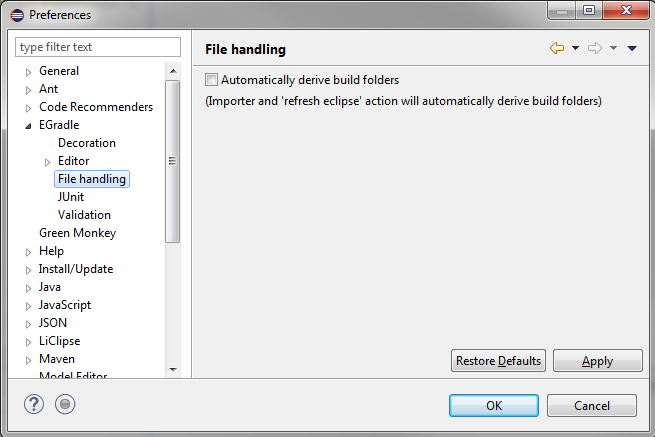
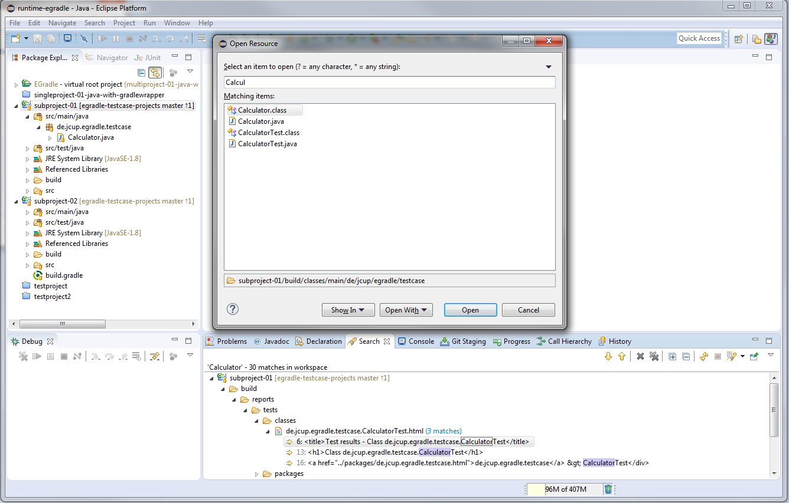
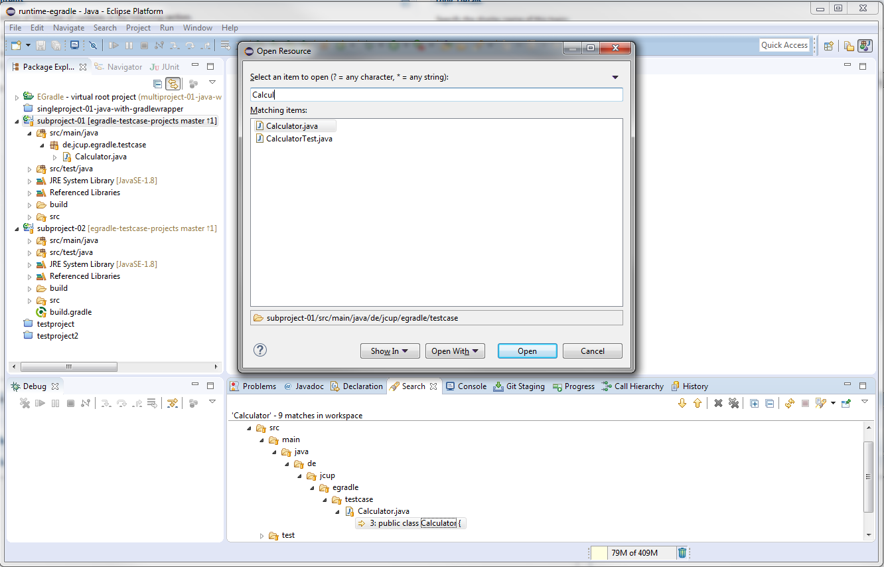
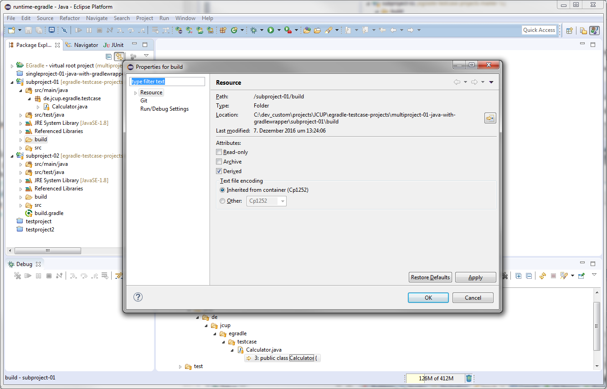

User guide
User guide
Inside file handling preferences you can turn on the automatical derive of builder folders - it's turned off per default:
When you have not enabled the feature, you will have build resources inside search results and also inside your "Open Resource" dialog appearing (see next picture). Sometimes this is very inconvenient, e.g. when you accidently edit a HTML file in build instead of source...

By enabling the feature in preferences, every call of Refresh eclipse dependencies and also EGradle imports will automatically set gradle build folders as "derived" which will change the results:
EGradle does only set "derived" to gradle build folders. You could change this in folder properties manually:
